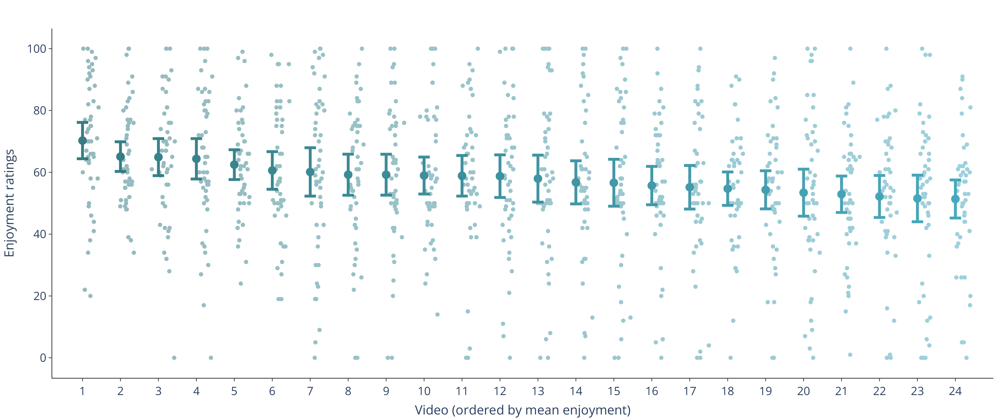
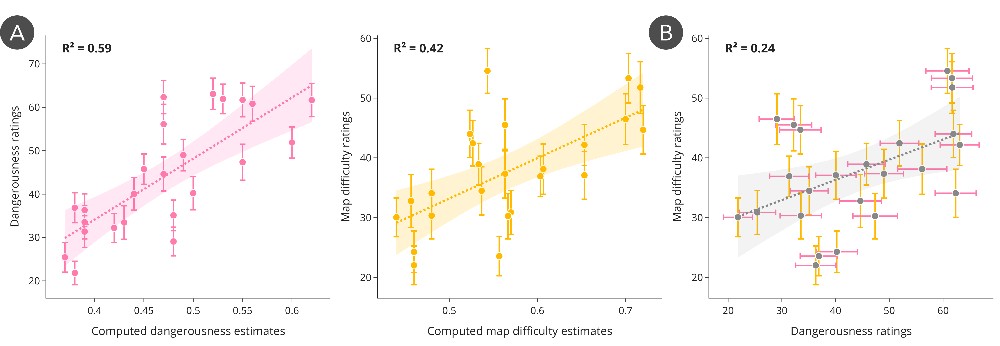

1Department of Computer Science, Stanford University
2Department of Psychology, Stanford University
Abstract
People often seek out ways to watch others perform complex action sequences
(e.g., sports). What makes some sequences more enjoyable to watch than
others? We generated 24 video clips of gameplay from a Flappy Bird-style
video game. Clips varied in difficulty (how often players succeeded on
average) and in moment-to-moment uncertainty (how likely the player was to
crash at any given step). Participants (N=864) rated each video on one of
three dimensions: how much they enjoyed it, how difficult the level
appeared, or how dangerous the player's trajectory appeared. We found that
participants preferred videos where the player seemed to be completing more
difficult obstacle courses, but dangerousness did not predict enjoyment
ratings. These findings show how procedurally generated stimuli can isolate
the factors that affect how enjoyable an action sequence is to watch.
Example Video
Map Difficulty Score
Map difficulty estimates how likely simulated agents are to fail on an
obstacle course, averaged across agents with different sensorimotor
abilities.
Dangerousness Score
Dangerousness estimates players' moment-to-moment susceptibility
to imminent failure, with higher scores reflecting smaller margins for
error along the trajectory.
Loading dangerousness graph...
Results
Participants showed moderate agreement in enjoyment ratings across the
24 videos, with mean ratings ranging from 51.4 to 70.3. Enjoyment
varied smoothly across stimuli rather than splitting into distinct
groups, with disagreement expressed mainly as spread around each
video's mean.

Dangerousness and map difficulty ratings closely tracked
model-based estimates from agent simulations (r = 0.79 and r = 0.64).
Difficulty judgments were also associated with dangerousness, suggesting
that viewers used both obstacle layout and trajectory-level cues when
judging how hard a course appeared.

Videos rated as more difficult were also rated as more enjoyable
(r = 0.68), whereas dangerousness showed no consistent relationship
with enjoyment. Mixed-effects models indicate that difficulty
ratings account for much of the explainable variance in enjoyment,
while dangerousness does not add significant predictive power.